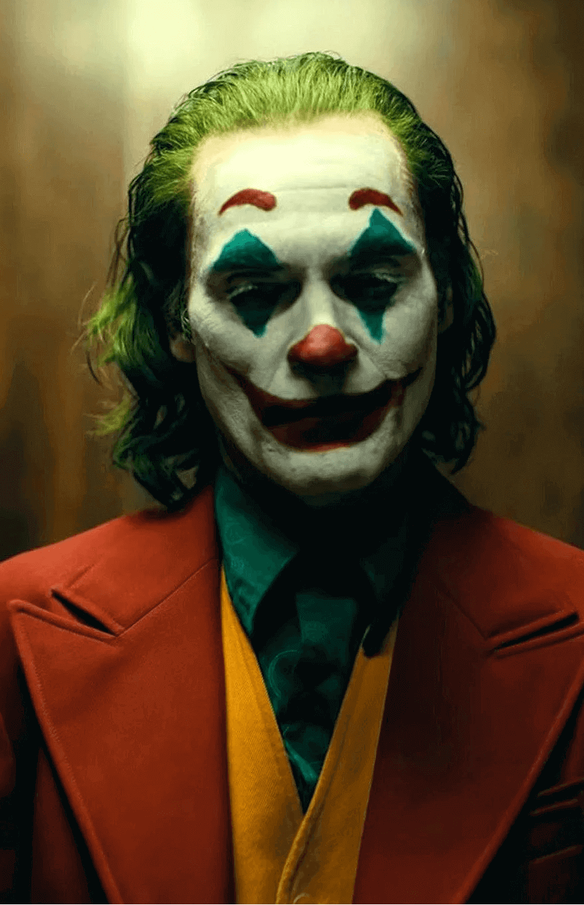
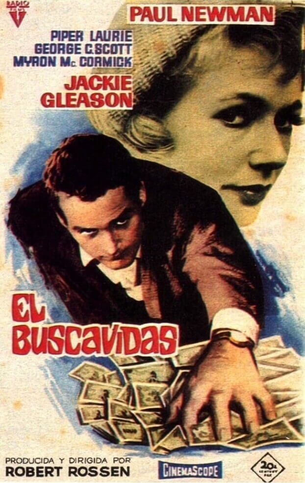
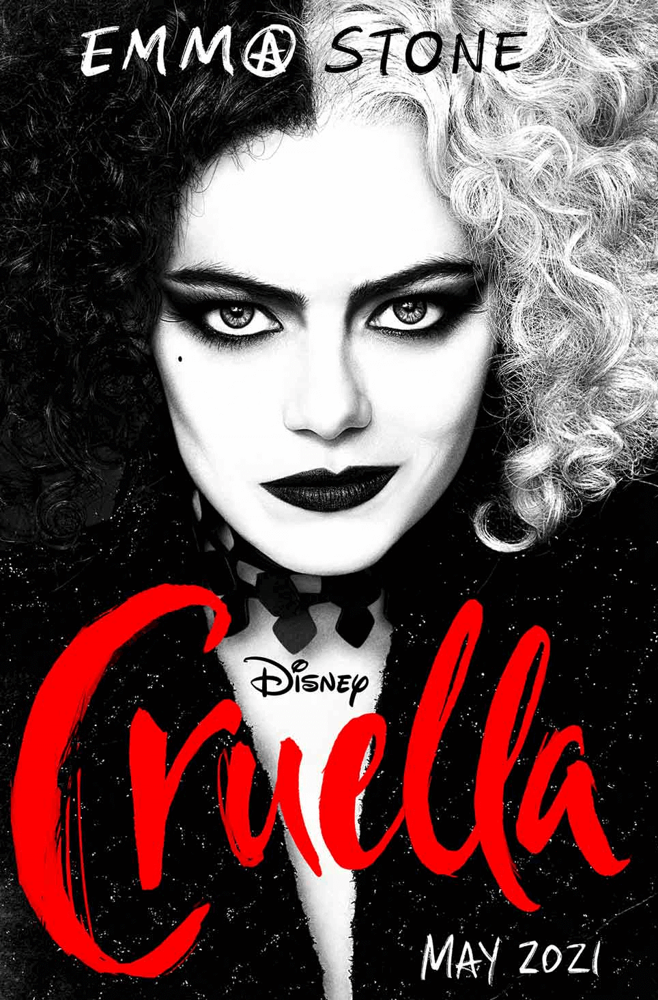

Peliculas
Peliculas
Joker
Drama | Crimen | Violento 
Arthur Fleck se siente solo entre la multitud, usa dos máscaras
mientras camina por las calles de Gotham, una ciudad hostil
donde reina la división y la insatisfacción. Una máscara le sirve para su
trabajo diario como payaso. La otra no se la puede quitar nunca,
es la apariencia que proyecta en un intento inútil de sentirse parte del mundo
que lo rodea. Se siente despreciado por una sociedad cruel.
Arthur no tiene padre y su madre es una mujer frágil quien le puso de apodo Happy, un nombre que ha pintado en Arthur una sonrisa que oculta un dolor infinito. Cuando lo intimidan en las calles, se burlan de su ropa, o cuando otros payasos se ríen de él, este ser asocial y estrafalario se siente aún más alejado de todos los que le rodean.

Arthur no tiene padre y su madre es una mujer frágil quien le puso de apodo Happy, un nombre que ha pintado en Arthur una sonrisa que oculta un dolor infinito. Cuando lo intimidan en las calles, se burlan de su ropa, o cuando otros payasos se ríen de él, este ser asocial y estrafalario se siente aún más alejado de todos los que le rodean.
El Jugador
Drama | Juego | Apuestas 
La película del año 1961 en blanco y negro, gira en torno a la vida de Eddie Felson (Paul Newman),
un joven arrogante y orgulloso que frecuenta con éxito las salas de billar ganando apuesta tras apuesta.
Decidido a ser proclamado el mejor jugador, busca al Gordo de Minnesota (Gleason),
un legendario campeón de billar. En su historia de ascensión y caída le acompañarán
Sarah Packard, una chica coja y alcohólica de la que se enamorará, y Bert Gordon,
un ruin jugador de ventaja que trata de explotar la habilidad de Felson
en su propio beneficio.
Gran drama psicológico con una emotiva plasmación del fracaso, retratado con un melancólico tono cercano a la lírica en la existencia de dos inestables personajes enlazados a causa de un azaroso destino.

Gran drama psicológico con una emotiva plasmación del fracaso, retratado con un melancólico tono cercano a la lírica en la existencia de dos inestables personajes enlazados a causa de un azaroso destino.
El Club de la Pelea
Violento | Drama | Suspenso
El narrador (Edward Norton) lleva una vida aburrida y monótona, que se vuelve
aún más triste cuando se vuelve adicto a los grupos de terapia para tratar de
superar su insomnio. Allí conoce a Marla (Helena Bonham Carter), una farsante a la que
comienza a despreciar y con la que se enfrenta en más de una ocasión.
Viajando en avión conoce a Tyler Durden (Brad Pitt), un vendedor de jabón con una clara ideología: el perfeccionismo es para los débiles y la destrucción de uno mismo es lo que vale la pena en la vida. Juntos canalizan su agresividad en una nueva forma de terapia. El concepto, en un principio secreto, se populariza y se forman clubes de lucha clandestinos en todas las ciudades trayéndoles varios problemas.

Viajando en avión conoce a Tyler Durden (Brad Pitt), un vendedor de jabón con una clara ideología: el perfeccionismo es para los débiles y la destrucción de uno mismo es lo que vale la pena en la vida. Juntos canalizan su agresividad en una nueva forma de terapia. El concepto, en un principio secreto, se populariza y se forman clubes de lucha clandestinos en todas las ciudades trayéndoles varios problemas.
El Padrino
Drama | Acción | Suspenso
América, años 40. Don Vito Corleone (Marlon Brando) es el respetado y
temido jefe de una de las cinco familias de la mafia de Nueva York.
Tiene cuatro hijos: Connie (Talia Shire), el impulsivo Sonny (James Caan),
el pusilánime Fredo (John Cazale) y Michael (Al Pacino), que no quiere
saber nada de los negocios de su padre. Cuando Corleone, en contra de
los consejos de 'Il consigliere' Tom Hagen (Robert Duvall), se niega a
participar en el negocio de las drogas, el jefe de otra banda ordena su asesinato.
Empieza entonces una violenta y cruenta guerra entre las familias mafiosas.
Bad Moms
Comedia | Madres Modernas
Como la mayoría de las madres modernas, Amy cuida a todos menos a sí misma.
Su vida es perfecta: un matrimonio feliz, hijos que superan todas las expectativas y
una hermosa casa. Hornea para la venta de pasteles de la escuela,
preside todos los comité- todo mientras sigue con su carrera. Hace que todo parezca fácil.
Pero en realidad, está en un momento decisivo: demasiado trabajo, compromisos y por demás exhausta para recibir órdenes de todos. ¿Por qué trabajar tanto sin recibir apreciación? ¿Qué pasaría si hiciera lo que ella quisiera? Harta, se une a otras madres y las conduce en una búsqueda para liberarse de responsabilidades convencionales en una juerga de libertad, diversión y auto-indulgencia de no-madre.
Pero en realidad, está en un momento decisivo: demasiado trabajo, compromisos y por demás exhausta para recibir órdenes de todos. ¿Por qué trabajar tanto sin recibir apreciación? ¿Qué pasaría si hiciera lo que ella quisiera? Harta, se une a otras madres y las conduce en una búsqueda para liberarse de responsabilidades convencionales en una juerga de libertad, diversión y auto-indulgencia de no-madre.
Cruella
Moda | Comedia | Drama 
Cruella sigue a una joven estafadora llamada Estella, una chica inteligente
y creativa decidida a hacerse un lugar en la moda con sus diseños de ropa.
Cuando se hace amiga de un par de jóvenes ladrones que aprecian su
apetito por las travesuras, juntos logran construir una vida en las calles
de Londres.
Un día, el talento de Estella llama la atención de la Baronesa von Hellman, la aterradoramente elegante y sofisticada leyenda de la moda interpretada por las 2 veces ganadora del Óscar, Emma Thompson. Pero su relación pone en marcha un curso de eventos y revelaciones que harán que Estella abrace su lado más perverso y se convierta en la disonante, vanguardista y ávida de venganza Cruella.
Un día, el talento de Estella llama la atención de la Baronesa von Hellman, la aterradoramente elegante y sofisticada leyenda de la moda interpretada por las 2 veces ganadora del Óscar, Emma Thompson. Pero su relación pone en marcha un curso de eventos y revelaciones que harán que Estella abrace su lado más perverso y se convierta en la disonante, vanguardista y ávida de venganza Cruella.
La Isla Siniestra
Misterio | Ciencia Ficción
En el año 1954 los agentes federales Ted Daniels y
Chuck Aule son enviados a la Isla Shutter, un sanatorio-prisión
para criminales con desórdenes mentales. Allí deberán
investigar la desaparición de una reclusa que asesinó a sus
hijos y que ha escapado sin dejar huella.
Serán ayudados en su búsqueda por profesionales psiquiatras.
Los efectos de una fuerte tormenta afecta la estabilidad del agente Daniels, perseguido por los recuerdos de la muerte trágica de su esposa y de su experiencia en la guerra.
Lo que comienza como una investigación de rutina rápidamente se torna en algo siniestro ya que en el desarrollo de la misma, Ted descubre impactantes y aterradoras verdades acerca de la isla.
Los efectos de una fuerte tormenta afecta la estabilidad del agente Daniels, perseguido por los recuerdos de la muerte trágica de su esposa y de su experiencia en la guerra.
Lo que comienza como una investigación de rutina rápidamente se torna en algo siniestro ya que en el desarrollo de la misma, Ted descubre impactantes y aterradoras verdades acerca de la isla.
The Truman Show
Ciencia Ficción | Emocionante
Truman Burbank (Jim Carrey), un hombre risueño que cree tener la vida
perfecta, es, sin saberlo, el protagonista de un programa de televisión
seguido por millones de espectadores. Las cámaras siempre han estado
ahí, escondidas, al acecho... Desde sus primeros pasos, pasando por
la caída de su primer diente, hasta su primer amor. Los escenarios y
las personas que conoce son productos de la ficción.
Un buen día, Truman empieza a sospechar de la farsa. Aunque en un principio ni él mismo se lo cree, finalmente descubre que, en efecto, forma parte de un show de televisión. Las cosas empeoran cuando se entera de que el accidente de su padre en el mar en realidad fue un montaje para dotar de dramatismo su vida.
Un buen día, Truman empieza a sospechar de la farsa. Aunque en un principio ni él mismo se lo cree, finalmente descubre que, en efecto, forma parte de un show de televisión. Las cosas empeoran cuando se entera de que el accidente de su padre en el mar en realidad fue un montaje para dotar de dramatismo su vida.
The Dark Knight
Acción | Emocionante | Crimen
Con la ayuda del teniente Jim Gordon (Gary Oldman) y el nuevo y comprometido
Fiscal del Distrito, Harvey Dent, Batman (Christian Bale) se propone destruir
para siempre el crimen organizado en Gotham City. Al principio la
asociación demuestra ser efectiva, sin embargo, la llegada de un
nuevo villano a la ciudad destruirá todos los planes de Batman.
Se trata de Joker (Heath Ledger), un psicópata retorcido y sádico, con una morbosa fascinación por todo lo que rodea al murciélago. Pronto comenzará a sembrar el pánico y a causar estragos en Gotham, convirtiéndose en el peor enemigo posible para El caballero oscuro, obligandolo a cruzar la línea que separa al héroe del justiciero.
Se trata de Joker (Heath Ledger), un psicópata retorcido y sádico, con una morbosa fascinación por todo lo que rodea al murciélago. Pronto comenzará a sembrar el pánico y a causar estragos en Gotham, convirtiéndose en el peor enemigo posible para El caballero oscuro, obligandolo a cruzar la línea que separa al héroe del justiciero.
Thor: Ragnarok
Fantasía | Acción | Comedia
Asgard se encuentra en manos de una poderosa amenaza,
la despiadada y todopoderosa Hela, que ha
robado el trono y ha enviado a Thor como prisionero hasta
el otro extremo de la galaxia sin su martillo.
En el planeta Sakaar, Thor tendrá que luchar por su vida como un gladiador. Para escapar de su cautiverio, Thor tendrá que resultar vencedor en una competición alienígena, y derrotar a su antiguo aliado y amigo Vengador El increíble Hulk. Pero, por alguna misteriosa razón, Hulk no recuerda a su compañero Vengador. El objetivo del Dios del trueno será volver a Asgard y parar el Ragnarok, un ciclo de vida y muerte sin fin que podría significar la destrucción total e inminente de la civilización asgardiana.
En el planeta Sakaar, Thor tendrá que luchar por su vida como un gladiador. Para escapar de su cautiverio, Thor tendrá que resultar vencedor en una competición alienígena, y derrotar a su antiguo aliado y amigo Vengador El increíble Hulk. Pero, por alguna misteriosa razón, Hulk no recuerda a su compañero Vengador. El objetivo del Dios del trueno será volver a Asgard y parar el Ragnarok, un ciclo de vida y muerte sin fin que podría significar la destrucción total e inminente de la civilización asgardiana.